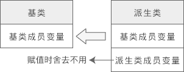

# 继承与派生
继承（Inheritance） 可以理解为一个类从另一个类获取成员变量和成员函数的过程。例如类 B 继承于类 A，那么 B 就拥有 A 的成员变量和成员函数。
在 C++ 中， 派生（Derive） 和 继承 是一个概念，只是站的角度不同。继承是儿子接收父亲的产业，派生是父亲把产业传承给儿子。
被继承的类称为父类或基类，继承的类称为子类或派生类。“子类” 和 “父类” 通常放在一起称呼，“基类” 和 “派生类” 通常放在一起称呼。
派生类除了拥有基类的成员，还可以定义自己的新成员，以增强类的功能。
以下是两种典型的使用继承的场景：
当你创建的新类与现有的类相似，只是多出若干成员变量或成员函数时，可以使用继承，这样不但会减少代码量，而且新类会拥有基类的所有功能。
当你需要创建多个类，它们拥有很多相似的成员变量或成员函数时，也可以使用继承。可以将这些类的共同成员提取出来，定义为基类，然后从基类继承，既可以节省代码，也方便后续修改成员。
继承方式包括 public（公有的）、private（私有的）和 protected（受保护的），此项是可选的，如果不写，那么默认为 private.
# public、protected、private
public、protected、private 修饰类的成员
类成员的访问权限由高到低依次为 public --> protected --> private，public 成员可以通过对象来访问，private 成员不能通过对象访问。
protected 成员和 private 成员类似，也不能通过对象访问 。但是当存在继承关系时，protected 和 private 就不一样了：基类中的 protected 成员可以在派生类中使用，而基类中的 private 成员不能在派生类中使用，下面是详细讲解。
public、protected、private 指定继承方式
不同的继承方式会影响基类成员在派生类中的访问权限。
- public 继承方式
- 基类中所有 public 成员在派生类中为 public 属性；
- 基类中所有 protected 成员在派生类中为 protected 属性；
- 基类中所有 private 成员在派生类中不能使用。
- protected 继承方式
- 基类中的所有 public 成员在派生类中为 protected 属性；
- 基类中的所有 protected 成员在派生类中为 protected 属性；
- 基类中的所有 private 成员在派生类中不能使用。
- private 继承方式
- 基类中的所有 public 成员在派生类中均为 private 属性；
- 基类中的所有 protected 成员在派生类中均为 private 属性；
- 基类中的所有 private 成员在派生类中不能使用
基类成员在派生类中的访问权限不得高于继承方式中指定的权限.也就是说，继承方式中的 public、protected、private 是用来指明基类成员在派生类中的最高访问权限的。
如果希望基类的成员既不向外暴露（不能通过对象访问），还能在派生类中使用，那么只能声明为 protected。
注意: 我们这里说的是基类的 private 成员不能在派生类中使用，并没有说基类的 private 成员不能被继承。实际上，基类的 private 成员是能够被继承的，并且（成员变量）会占用派生类对象的内存，它只是在派生类中不可见，导致无法使用罢了.
如果派生类中的成员（包括成员变量和成员函数）和基类中的成员重名，那么就会遮蔽从基类继承过来的成员，对于成员函数要引起注意，不管函数的参数如何，只要名字一样就会造成遮蔽.
# 基类派生类构造函数
基类的成员函数可以被继承，可以通过派生类的对象访问，但这仅仅指的是普通的成员函数， 类的构造函数不能被继承 。构造函数不能被继承是有道理的，因为即使继承了，它的名字和派生类的名字也不一样，不能成为派生类的构造函数，当然更不能成为普通的成员函数。
在设计派生类时，对继承过来的成员变量的初始化工作也要由派生类的构造函数完成，但是大部分基类都有 private 属性的成员变量，它们在派生类中无法访问，更不能使用派生类的构造函数来初始化。
这种矛盾在 C++ 继承中是普遍存在的，解决这个问题的思路是：在派生类的构造函数中调用基类的构造函数.
通过派生类创建对象时必须要调用基类的构造函数，这是语法规定。换句话说，定义派生类构造函数时最好指明基类构造函数；如果不指明，就调用基类的默认构造函数（不带参数的构造函数）；如果没有默认构造函数，那么编译失败.
和构造函数类似，析构函数也不能被继承。与构造函数不同的是，在派生类的析构函数中不用显式地调用基类的析构函数，因为每个类只有一个析构函数，编译器知道如何选择，无需程序员干涉.
另外析构函数的执行顺序和构造函数的执行顺序也刚好相反：
- 创建派生类对象时，构造函数的执行顺序和继承顺序相同，即先执行基类构造函数，再执行派生类构造函数。
- 而销毁派生类对象时，析构函数的执行顺序和继承顺序相反，即先执行派生类析构函数，再执行基类析构函数
#include <iostream> | |
using namespace std; | |
namespace BaseDerived | |
{ | |
class People | |
{ | |
protected: | |
char *m_name; | |
int m_age; | |
public: | |
People(); | |
People(char *, int); | |
~People(); | |
}; | |
People::People() : m_name("People"), m_age(0) | |
{ | |
cout << "People constructor" << endl; | |
} | |
People::People(char *name, int age) : m_name(name), m_age(age) | |
{ | |
cout << "People constructor" << endl; | |
} | |
People::~People() { cout << "People destructor" << endl; } | |
class Student : public People | |
{ | |
private: | |
float m_score; | |
public: | |
Student(); | |
Student(char *name, int age, float score); | |
~Student(); | |
void display(); | |
}; | |
// 派生类构造函数中只能调用直接基类的构造函数，不能调用间接基类的 | |
Student::Student() : m_score(0.0) | |
{ | |
cout << "Student constructor" << endl; | |
} | |
Student::Student(char *name, int age, float score) : People(name, age), m_score(score) | |
{ | |
cout << "Student constructor" << endl; | |
} | |
Student::~Student() | |
{ | |
cout << "Student destructor" << endl; | |
} | |
void Student::display() | |
{ | |
cout << m_name << "的年龄是:" << m_age << ", 成绩是:" << m_score << endl; | |
} | |
} // namespace BaseDerived | |
using namespace BaseDerived; | |
int main() | |
{ | |
Student stu1; | |
stu1.display(); | |
Student stu2("小明", 16, 90.5); | |
stu2.display(); | |
return 0; | |
} |
运行结果:
People constructor
Student constructor
People的年龄是:0, 成绩是:0
People constructor
Student constructor
小明的年龄是:16, 成绩是:90.5
Student destructor
People destructor
Student destructor
People destructor
# 多重继承
在前面的例子中，派生类都只有一个基类，称为单继承（Single Inheritance）。除此之外，C++ 也支持多继承（Multiple Inheritance），即一个派生类可以有两个或多个基类。
多继承容易让代码逻辑复杂、思路混乱，一直备受争议，中小型项目中较少使用，后来的 Java、C#、PHP 等干脆取消了多继承。
多继承的语法也很简单，将多个基类用逗号隔开即可。例如已声明了类 A、类 B 和类 C，那么可以这样来声明派生类 D：
class D: public A, private B, protected C{ | |
// 类 D 新增加的成员 | |
} |
多继承下的构造函数
多继承形式下的构造函数和单继承形式基本相同，只是要在派生类的构造函数中调用多个基类的构造函数。以上面的 A、B、C、D 类为例，D 类构造函数的写法为：
D(形参列表): A(实参列表), B(实参列表), C(实参列表){ | |
// 其他操作 | |
} |
基类构造函数的调用顺序和和它们在派生类构造函数中出现的顺序无关，而是和声明派生类时基类出现的顺序相同。
#include <iostream> | |
using namespace std; | |
// 基类 | |
class BaseA | |
{ | |
public: | |
BaseA(int a, int b); | |
~BaseA(); | |
public: | |
void show(); | |
protected: | |
int m_a; | |
int m_b; | |
}; | |
BaseA::BaseA(int a, int b) : m_a(a), m_b(b) | |
{ | |
cout << "BaseA constructor" << endl; | |
} | |
BaseA::~BaseA() | |
{ | |
cout << "BaseA destructor" << endl; | |
} | |
void BaseA::show() | |
{ | |
cout << "m_a = " << m_a << endl; | |
cout << "m_b = " << m_b << endl; | |
} | |
// 基类 | |
class BaseB | |
{ | |
public: | |
BaseB(int c, int d); | |
~BaseB(); | |
void show(); | |
protected: | |
int m_c; | |
int m_d; | |
}; | |
BaseB::BaseB(int c, int d) : m_c(c), m_d(d) | |
{ | |
cout << "BaseB constructor" << endl; | |
} | |
BaseB::~BaseB() | |
{ | |
cout << "BaseB destructor" << endl; | |
} | |
void BaseB::show() | |
{ | |
cout << "m_c = " << m_c << endl; | |
cout << "m_d = " << m_d << endl; | |
} | |
// 派生类 | |
class Derived : public BaseA, public BaseB | |
{ | |
public: | |
Derived(int a, int b, int c, int d, int e); | |
~Derived(); | |
public: | |
void display(); | |
private: | |
int m_e; | |
}; | |
Derived::Derived(int a, int b, int c, int d, int e) : BaseA(a, b), BaseB(c, d), m_e(e) | |
{ | |
cout << "Derived constructor" << endl; | |
} | |
Derived::~Derived() | |
{ | |
cout << "Derived destructor" << endl; | |
} | |
void Derived::display() | |
{ | |
BaseA::show(); // 调用 BaseA 类的 show () 函数 | |
BaseB::show(); // 调用 BaseB 类的 show () 函数 | |
cout << "m_e = " << m_e << endl; | |
} | |
int main() | |
{ | |
Derived obj(1, 2, 3, 4, 5); | |
obj.display(); | |
return 0; | |
} |
运行结果:
BaseA constructor
BaseB constructor
Derived constructor
m_a = 1
m_b = 2
m_c = 3
m_d = 4
m_e = 5
Derived destructor
BaseB destructor
BaseA destructor
# 向上转型
类其实也是一种数据类型，也可以发生数据类型转换，不过这种转换只有在基类和派生类之间才有意义，并且只能将派生类赋值给基类，包括将派生类对象赋值给基类对象、将派生类指针赋值给基类指针、将派生类引用赋值给基类引用，这在 C++ 中称为向上转型（Upcasting）。相应地，将基类赋值给派生类称为向下转型（Downcasting）.
向上转型非常安全，可以由编译器自动完成；向下转型有风险，需要程序员手动干预.
赋值的本质是将现有的数据写入已分配好的内存中，对象的内存只包含了成员变量，所以 **对象之间的赋值** 是 **成员变量的赋值**，成员函数不存在赋值问题.
#include <iostream> | |
using namespace std; | |
// 基类 | |
class A | |
{ | |
public: | |
A(int a); | |
public: | |
void display(); | |
public: | |
int m_a; | |
}; | |
A::A(int a) : m_a(a) {} | |
void A::display() | |
{ | |
cout << "Class A: m_a=" << m_a << endl; | |
} | |
// 派生类 | |
class B : public A | |
{ | |
public: | |
B(int a, int b); | |
public: | |
void display(); | |
public: | |
int m_b; | |
}; | |
B::B(int a, int b) : A(a), m_b(b) {} | |
void B::display() | |
{ | |
cout << "Class B: m_a=" << m_a << ", m_b=" << m_b << endl; | |
} | |
int main() | |
{ | |
A a(10); | |
B b(66, 99); | |
// 赋值前 | |
a.display(); | |
b.display(); | |
cout << "--------------" << endl; | |
// 赋值后 | |
a = b; | |
a.display(); | |
b.display(); | |
return 0; | |
} |
运行结果:
Class A: m_a=10
Class B: m_a=66, m_b=99
--------------
Class A: m_a=66 // m_a 赋值为66.
Class B: m_a=66, m_b=99
将派生类对象赋值给基类对象时，会舍弃派生类新增的成员，也就是“大材小用” .

可以发现，即使将派生类对象赋值给基类对象，基类对象也不会包含派生类的成员，所以依然不同通过基类对象来访问派生类的成员.
对于上面的例子，a.m_a 是正确的，但 a.m_b 就是错误的，因为 a 不包含成员 m_b.
这种转换关系是不可逆的， 只能用派生类对象给基类对象赋值，而不能用基类对象给派生类对象赋值 。理由很简单，基类不包含派生类的成员变量，无法对派生类的成员变量赋值。同理，同一基类的不同派生类对象之间也不能赋值.
编译器通过指针来访问成员变量，指针指向哪个对象就使用哪个对象的数据；编译器通过指针的类型来访问成员函数，指针属于哪个类的类型就使用哪个类的函数.
基类的引用也可以指向派生类的对象，并且它的表现和指针是类似的.